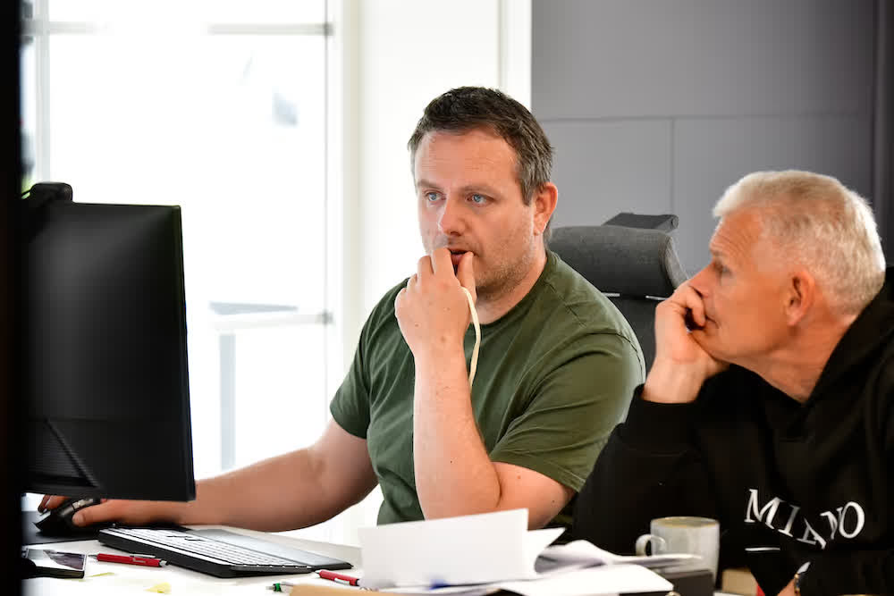
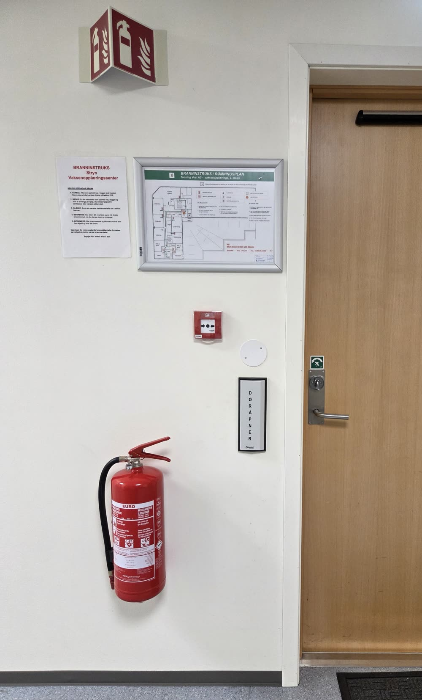

01 · Situasjon
Tre kjøpsinnganger. Samme avklaring etterpå.
A
Noe er påpekt
- Tilsyn / avvik / pålegg
- Kontrollfunn
- Krav fra rådgiver eller entreprenør
- Kostbart tiltak / uenighet om løsning
B
Noe skal endres
- Nybygg / ombygging
- Rehabilitering / bruksendring
- Ny leietaker / nytt prosjekt
- Nytt utstyr / endret drift
C
Noe er uklart
- Hva gjelder – og hvem har ansvaret?
- Er dette faktisk et krav?
- Holder dokumentasjonen?
- Kan vi gjøre det selv / finnes det en annen løsning?
02 · FLO avklarer
Faglig metode. Ikke en generisk prosesslinje.
01
Bygg
02
Bruk
03
Dokumentasjon
04
Ansvar
05
Risiko
06
Regelverk
07 · kjerne
Faktisk krav
08
Alternativer
09
Prioritering
03 · Hvem er kunden / ICP
Ulike verdener. Samme mål: tryggere bygg, dokumentert neste steg.
01
Privat
Boligeier, privat byggherre og utleier
02
Kommune / offentlig
Eiendom, dokumentasjon og opplæring
03 · kjerne
Eiendom / forvaltning
Kontroll på bygg og portefølje
04
Arkitekt / byggherre
FLO inn i tidligfase
05
Industri / kraft
Endringer i drift endrer risiko
06
Entreprenør
Avklar før endring utføres
04 · Produkt- og beslutningsspor
Riktig spor etter avklaring. Ikke en produktkatalog først.
A · Opplæring
Ikke start med «hvilket kurs?»
Start med rolle, ansvar og risiko.
Virksomhet
Bygg
Risiko
Roller
Eksisterende kompetanse
Nødvendig kompetanse
DigitaltTeori · onboarding · repetisjon · fagmoduler
FysiskSlokking · evakuering · scenario · øvelse
Resultat: opplæringsplan + videre oppfølging
B · Beslutningsmotor
Påstand eller krav?
FLO skiller det som blir sagt fra det som faktisk kan dokumenteres.
Påstand
Fakta
Lov / forskrift / standard / fagkilde
Klassifisering
Konsekvens
Alternativer
Anbefaling
Krav
Anbefaling
Faglig vurdering
C · Leveranseform
Riktig form for riktig sak
Geografi og dekning avklares per oppdrag. Ikke låst i kartet.
DigitaltDokumentgjennomgang · faglig vurdering · RIBr / rådgivning der egnet · avvik / krav · second opinion · opplæring
HybridDigital vurdering først · avklar fysisk behov · konkret tilbud
Fysisk Befaring · kontroll · byggkartlegging · utførelse · vedlikehold · praktisk opplæring · øvelser
05 · Markedsspørsmål
Slik kunden kommer inn. Inngang til avklaring, ikke til en ferdig pakke.
Hva gjelder?
Har vi kontroll?
Vi har fått et avvik
Vi skal bygge om
Kan vi gjøre dette selv?
Er tiltaket faktisk nødvendig?
Trenger alle samme opplæring?
06 · Beslutningsflyt
Kartets kommersielle hovedlogikk, ende til ende.
04
Digitalt / hybrid / fysisk
Bygg

Avklaring

Dokumentasjon